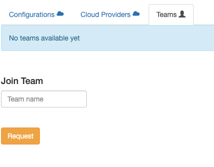
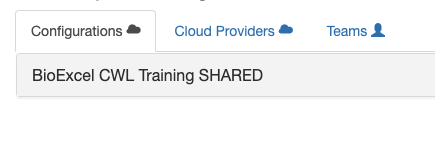
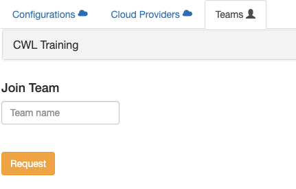

Team Membership¶
You need permissions to build a VM and in the BioExcel Cloud Portal a concept of Teams is used to grant permissions. In order to build a VM for CWL Training, you need to become a member of a team called: CWL Training.
Requesting team membership¶
You will first need to register with Elixir AAI.
Once you have registered, you can check it was successful by logging onto the BioExcel Cloud Portal.
Log in to BioExcel Portal as described in the previous chapter.
Click your user name in the upper right corner and choose Profile from the drop-down menu.
Click the Tab Teams. If you are a new user to BioExcel Cloud Portal, you should see no teams on the list.
In the field below Join Team, type:
CWL Trainingand click Request.
{kind=link}
Checking team membership¶
After the team owner adds you to a team (that is manual, so please, give us some time), you will receive an email saying:
Hi, User Anna Niewielska has added you to the team 'CWL Training'. Please click on the link below to login if you haven't already https://portal.tsi.ebi.ac.uk/login or click on https://portal.tsi.ebi.ac.uk/team/CWL%20Training to view the team. Thanks, The CloudPortal Team.
Warning
If no email arrives in a considerable time, please try logging in to the BioExcel Portal and checking if you have been already added to the team. If you can see the team, as presented below, you have indeed been added and you can proceed with the manual regardless of no email received.
Ignore instructions in the email (they go to a different portal) and instead log in to the BioExcel Portal https://bioexcel.ebi.ac.uk/
Go to the profile page by clicking on your user name in the upper right corner and choose Profile from the drop-down menu.
You should see this in Configurations:

{kind=link}
Click on Teams and you should also see this:

{kind=link}